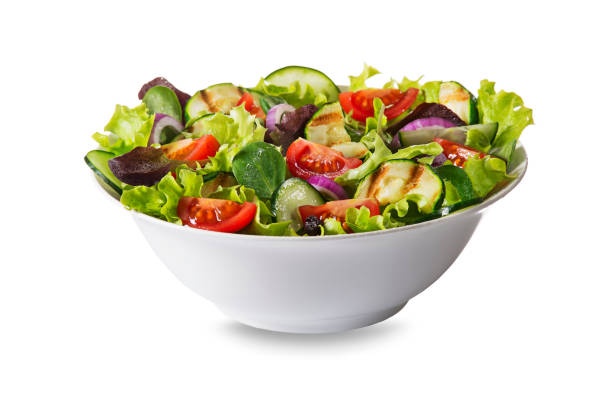

Salad Recipe

Description
A salad ia a nutritious, easy meal to make on the go or for a nice dinner.
It can be convenient for a meal to eat at work and easy to prepare the
night before. Personally, I love salads and I eat them all the time.
Ingredients
- Spring Mix
- Red Onions
- Cucumbers
- Tomatoes
- Salt and Pepper
- Olive Oil (or whatever dressing you prefer)
- And whatever othe vegetables you like
Steps
- Wash and chop vegetables.
- Put vegetables in a bowl.
- Add in salt, pepper, and olive oil.
- Mix.